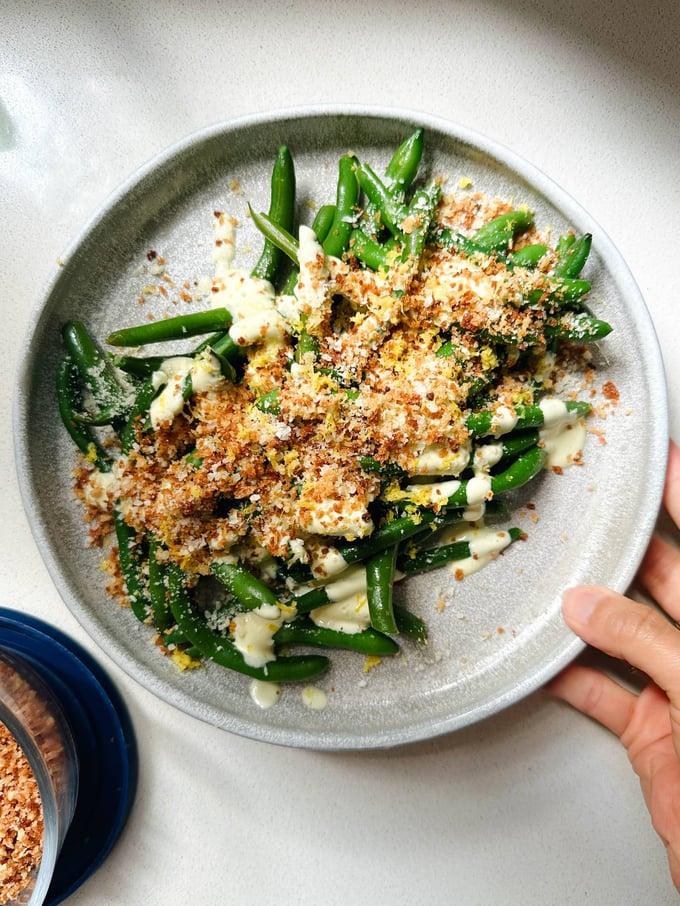

Avocado Caesar Green Beans

Description
These Avocado Caesar Green Beans are some type of magic! Tender green beans, a zippy avocado caesar, and toasty panko all over top.
Ingredients
- half an avocado
- 1/4 cup mayonnaise
- 1/4 cup water
- 1 large clove garlic
- 1/2 tablespoon Dijon mustard
- 2 tablespoons lemon juice
- 1/2 teaspoon salt
- 1 cup panko breadcrumbs
- 1/2 teaspoon garlic powder
- 2 tablespoons olive oil
- pinch of salt
- 12 ounces green beans
- Parmesan for topping
Steps
- Make the Avocado Caesar: Blitz everything in a small blender jar until smooth sauce / dressing forms. Taste and adjust (look out, it’s really good). If it’s too thick, add some extra water until it drizzles smoothly off the end of a spoon.
- Make the Panko Crispies: Mix panko, garlic powder, olive oil, and salt in a small microwave-safe bowl. Microwave in 30 second increments, stirring after each one, until the panko starts to turn golden (about 2-3 minutes total). It’ll be very hot – be careful, don’t taste it yet.
- Cook the Green Beans: Boil green beans for 3-5 minutes until bright green. If you want to preserve the best color, drain and transfer to a bowl with ice water to shock the green beans and stop them from cooking further. Not necessary, but I do this sometimes because I like the very bright green!
- Assemble and Serve: Arrange the green beans on a platter, top with dollops of the avocado caesar, and sprinkles of panko crispies and grated Parmesan. (You’ll probably have a little bit of avocado caesar left which I never have any issues using up!) Add lemon zest, black pepper, or chili flakes if you want. Serve warm or cold with your favorite protein, and maybe a little extra sauce for dunking. So good!